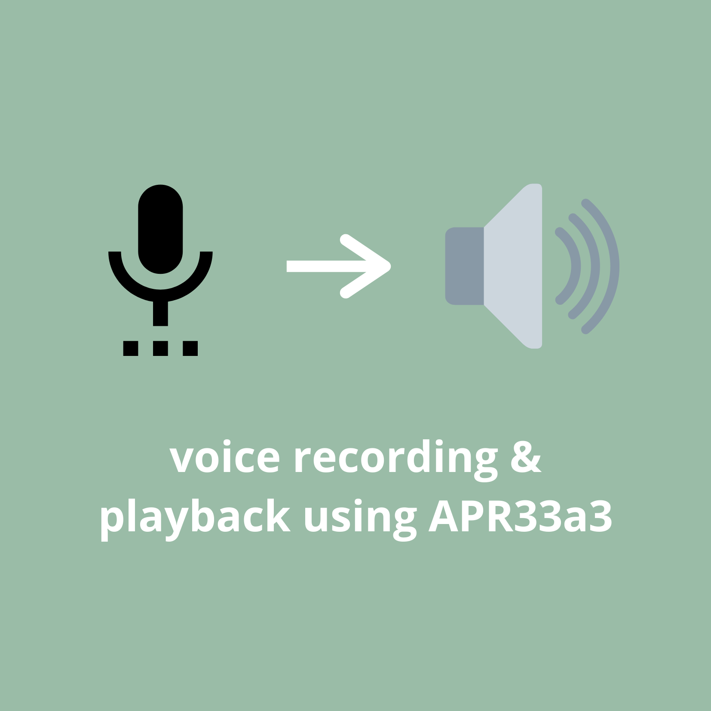

Audo Synthesizer using APR33a3 is my 3rd year mini project. I was searching for a device that can record our voice
& save it without using any controller & memorycard. So I come up to reasearch & found APR33a3,
a wonderfull IC that can do exactly same with 8 different voice record upto 1.5mints.
So i decided to work on this project. I first make project on breadboard & decided to make in on final PCB.
I use Proteus software & etched pcb at home. Audio quality is very good. This project was really fun.
Take a look on project report
© 2020 Chirayu Barde